Modern Next.js applications require a deliberate split between server-rendered and client-interactive code, a clear boundary for client-only UI state, and validation logic that cannot be bypassed by disabling JavaScript in the browser. Assignment 1 required building a Next.js App Router interface, CodeSpace, that (a) uses accessible shadcn/ui and Radix UI primitives with hydration-safe dark/light/system theming, (b) manages ephemeral client UI state through a persistent Zustand store without duplicating server-owned data, and (c) performs type-safe, Zod-validated form mutations through Server Actions, with the same schema enforced identically on the client and on the server.
CodeSpace is a Server-Component-first Next.js 16 application. Server Components fetch data directly via
Prisma and render the dashboard shell; interactivity is isolated into leaf Client Components. A single
Zustand store persists local UI preferences to localStorage, and a shared Zod schema
library drives both react-hook-form validation in the browser and Server Action validation
on the server.
| Layer | Technology (installed version) |
|---|---|
| Framework / runtime | Next.js 16.3.5 (App Router) · React 19.2.8 |
| Styling / components | Tailwind CSS 4 · shadcn/ui pattern over Radix UI (Dialog, DropdownMenu, Select, Tabs, Toast, Tooltip, Label) |
| Theming | next-themes 0.4.6 (dark / light / system) |
| Client state | Zustand 5.0.15 with persist middleware |
| Forms & validation | react-hook-form 7.88 + @hookform/resolvers 5.9 + Zod 4.6.5 |
| Feedback UI | sonner (toast dispatch), React Suspense (loading.tsx, error.tsx) |
GitHub Repository: [REPOSITORY URL — TO BE ADDED]
Every layout.tsx and page.tsx is a Server Component by default; the
authenticated dashboard route (src/app/(dashboard)/page.tsx) queries Prisma directly
(prisma.project.findMany()) and passes serializable results as props to Client Components
such as ProjectList.tsx and TaskList.tsx. "use client" is pushed
to leaves only — forms, dropdowns, the theme toggle, and Header.tsx/NavLink.tsx
— keeping the majority of the render tree free of client JavaScript. Because the dashboard depends on a
live database read at request time, it is explicitly marked export const dynamic =
"force-dynamic", so Next.js renders it on-demand instead of attempting static prerendering at build
time. For hydration safety, the root <html> element carries suppressHydrationWarning
so that next-themes's post-mount class injection (read from localStorage) does not
raise a mismatch warning or flash the wrong theme, and a dedicated useStoreHydration hook defaults
the persisted Zustand values to a neutral state during server rendering, applying the real
localStorage value only after client mount so the server and first client render match exactly.
CodeSpace enforces a strict three-way split (documented in STATE_MANAGEMENT.md): server-owned
data (projects, tasks, notes) is never cached client-side and is re-fetched by Server Components on every
navigation; Server Actions call revalidatePath("/") after a mutation to force the next render to
reflect the database; and the Zustand store (useWorkspaceStore.ts) is limited strictly to
ephemeral, machine-local UI preferences — sidebarCollapsed, compactMode,
projectFilter, taskFilter — persisted under the key
workspace-storage. Because the store is imported only by the Client Components that read it, a
state change re-renders just those subscribers and never invalidates the parent Server Component tree, so
toggling a local filter never triggers a server round-trip, and a server-side mutation never resets the
persisted client preferences. The one deliberate exception to "no client caching of server data" is React's
useOptimistic hook in TaskList.tsx, used narrowly for instant visual feedback when a
task is marked complete, ahead of the Server Action's round trip — a lighter-weight alternative to a
general-purpose client cache such as React Query or SWR, which this project deliberately does not use.
Lighthouse was run (desktop preset, headless Chrome, production build) against the authenticated dashboard
route (/) and the unauthenticated /login route. Raw reports are committed as
lighthouse-dashboard-real.json and lighthouse-login-real.json; figures below are
read directly from those files. Lighthouse's lab environment reports Total Blocking Time as the proxy for
field INP.
| Route | Performance | Accessibility | LCP | CLS | TBT (INP proxy) |
|---|---|---|---|---|---|
/ (dashboard, authenticated) | 95/100 | 100/100 | 1.4 s (1416 ms) | 0.001 | 0 ms |
/login | 99/100 | 100/100 | 1.0 s (1002 ms) | 0.000 | 0 ms |
Table 1. Core Web Vitals from the raw Lighthouse JSON reports (production build).
The dashboard's low SEO score (54/100, not shown above) is intentional — robots: { index:
false, follow: false } is set for this authenticated, private workspace. During this audit, a
WCAG AA contrast failure was found and fixed on the dashboard (--muted-foreground and
--destructive tokens, both under the 4.5:1 threshold); darkening both by one Tailwind shade in
globals.css raised dashboard accessibility from 96/100 to the 100/100 reported above.
| Requirement | Status | Evidence |
|---|---|---|
| shadcn/ui + Radix accessible primitives | Implemented | src/components/ui/* |
| next-themes theming, no hydration mismatch | Implemented | theme-provider.tsx, layout.tsx |
| Persistent Zustand client store | Implemented | useWorkspaceStore.ts |
| React Hook Form + shared Zod schema (client & server) | Implemented | validations.ts, src/actions/* |
| Server Actions, loading/error/optimistic UI | Implemented | src/actions/*, loading.tsx, useOptimistic |
| Lighthouse / Core Web Vitals audit | Implemented & verified | Section 5, raw JSON reports |
Assignment 2 required a relational database modelled in Prisma ORM and backed by PostgreSQL, populated through a repeatable Faker.js seeding pipeline; session-based authentication with role-based authorization enforced on protected Server Actions and Route Handlers, gated by a Next.js proxy/middleware layer; and a transactional email pipeline built on React Email and Resend, with webhook-verified delivery logging back into the database.
CodeSpace models nine relational entities in prisma/schema.prisma against PostgreSQL, seeded
by prisma/seed.ts using Faker.js, and reset in one command. Better Auth provides session
authentication with a custom role field (GUEST / MEMBER /
ADMIN); the Next.js proxy performs an optimistic authentication check, while the authoritative
role check runs inside each Server Action / Route Handler. A successful project-creation mutation triggers a
React Email template dispatched via Resend, and a Svix-verified Resend webhook logs delivery/bounce events.
| Layer | Technology (installed version) |
|---|---|
| ORM / database | Prisma ORM 5.21.1 · PostgreSQL 17 |
| Mock data seeding | @faker-js/faker 10.6.0 · tsx 4.23.15 (seed runner) |
| Authentication | Better Auth 1.7.5 (Prisma adapter, email/password provider) |
| Edge authorization gate | Next.js Proxy (src/proxy.ts, replaces middleware.ts in Next.js 16) |
| Transactional email | Resend 6.28.1 + @react-email/components 1.0.12 |
| Webhook verification | svix 2.5.0 |

Figure 1. Request flow: proxy authentication gate → Server Components / Server Actions / Route Handlers → Better Auth + Prisma/PostgreSQL → React Email/Resend dispatch → Svix-verified webhook → audit log. Generated from architecture.mmd using Mermaid.
| Entity | Key Relationships | Purpose |
|---|---|---|
| User | 1:N to Session, Account, Project, Task, Note, CodeSnippet, CodingProblem, ProgressRecord, AuditLog | Identity + Better Auth session + application Role enum |
| Session / Account / Verification | N:1 to User | Better Auth session & hashed-credential storage |
| Project | N:1 to User; 1:N to Task | Admin-only top-level workspace item |
| Task | N:1 to Project; N:1 to User | Actionable work item |
| Note / CodeSnippet / CodingProblem / ProgressRecord | N:1 to User | Personal knowledge base & tracking data |
| AuditLog | N:1 to User (nullable) | User actions and system webhook events |
Table 2. Core entities from prisma/schema.prisma. All foreign keys are indexed with onDelete: Cascade.
src/proxy.ts checks only for the presence of the better-auth.session_token cookie
and redirects unauthenticated requests to /login (or authenticated requests away from
/login); it does not decode the session or check role. The authoritative role check happens
inside each Server Action/Route Handler via getCurrentUser()
(src/lib/auth.ts), which resolves the session through Better Auth and reads the
role field exposed via user.additionalFields (default GUEST,
input: false so it can never be client-supplied). createProject rejects any caller
whose role is not ADMIN.
| Verified Request | Result |
|---|---|
Sign in as admin@codespace.dev | 200 OK, session role ADMIN |
Sign in as guest@codespace.dev | 200 OK, session role GUEST |
POST /api/projects as ADMIN | 201 Created |
POST /api/projects as GUEST | 403 Forbidden |
GET /api/projects, no session | 401 Unauthorized |
GET /, no session (proxy) | 307 redirect to /login |
Table 3. Live authorization verification against a production build and a real PostgreSQL database (source: PROJECT_AUDIT.md).
src/emails/ProjectCreatedEmail.tsx defines the React Email template; src/lib/email.ts
calls resend.emails.send() as a fire-and-forget dispatch after createProject's
Prisma transaction commits, so a slow or failing email provider never blocks the mutation.
src/app/api/webhooks/resend/route.ts verifies the svix-id/svix-timestamp/
svix-signature headers against RESEND_WEBHOOK_SECRET and, on a verified
email.delivered or email.bounced event, writes an AuditLog row.
NODE_ENV=development, ENABLE_EMAILS unset) was
exercised successfully and logged to the console. No RESEND_API_KEY or
RESEND_WEBHOOK_SECRET was available in this environment, so a real Resend delivery and a real
signed webhook callback were not exercised end-to-end; the code for both paths was reviewed
and is structurally correct. Live delivery/webhook logs must be captured manually once real credentials are
provisioned (see Section 7).
| Requirement | Status | Evidence |
|---|---|---|
| Relational Prisma schema on PostgreSQL | Implemented | prisma/schema.prisma |
| Faker.js seed script with FK integrity | Implemented | prisma/seed.ts |
| Single-command reset/migrate/seed | Implemented | npm run db:reset |
| Better Auth + RBAC (Admin/Member/Guest) | Implemented & live-verified | Section 5, Table 3 |
| Proxy authentication gate | Implemented | src/proxy.ts |
| React Email + Resend dispatch | Implemented; mock verified, live delivery pending real credentials | Section 6 |
| Resend webhook → audit log | Implemented; not verified against a live webhook | Section 6 |
Manual completion required: student name/roll number (header of this document), GitHub repository URL (Assignment 1, Section 2), live Resend email/webhook evidence once RESEND_API_KEY / RESEND_WEBHOOK_SECRET are provisioned, and database screenshots if required separately from this note.